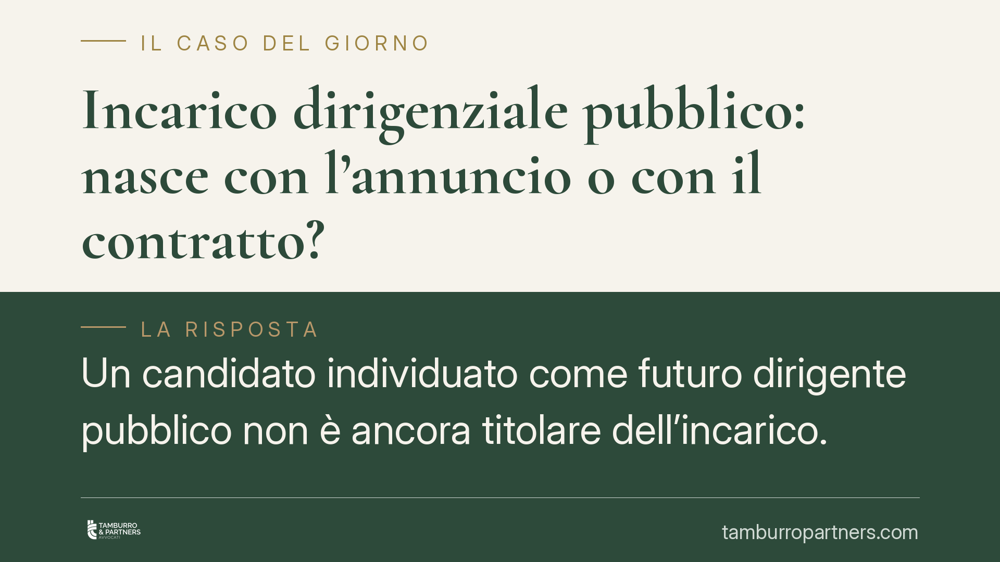

Incarico dirigenziale pubblico: nasce con l'annuncio o con il contratto?
Un candidato individuato come futuro dirigente pubblico non è ancora titolare dell'incarico. La Cassazione ribadisce che il rapporto nasce solo con l'atto formale di conferimento e la stipula del contratto individuale scritto. Fino a quel momento l'Amministrazione può rivalutare la scelta, purché nel rispetto di correttezza e buona fede. Vediamo perché la distinzione conta.

Il caso
Un candidato ritenuto idoneo a un incarico dirigenziale presso un'Amministrazione statale contestava il mancato perfezionamento della nomina, sostenendo che l'individuazione a suo favore avesse già fatto sorgere il rapporto. La Corte d'Appello di Roma respingeva la pretesa; la Sezione Lavoro della Cassazione ha confermato l'orientamento consolidato.
Nota redazionale sulla fonte: l'estremo della pronuncia riportato dalla fonte secondaria (sent. n. 22879, con datazione indicata al 2026) non risulta a oggi verificabile in modo autonomo, e l'anno appare anomalo per una decisione già commentata. In assenza di riscontro diretto sul dispositivo, evitiamo di attribuire alla decisione un numero e un anno non confermati. I principi qui esposti riflettono comunque l'indirizzo costante della Cassazione in materia.
Inquadramento normativo
Nel pubblico impiego privatizzato il conferimento degli incarichi dirigenziali è disciplinato dall'art. 19 del D.Lgs. 165/2001. La norma scandisce una sequenza precisa: individuazione del soggetto, provvedimento formale di conferimento e definizione, con il contratto individuale, di oggetto, obiettivi, durata e trattamento economico.
Il contratto individuale richiede la forma scritta ed è l'atto che costituisce il rapporto: senza di esso non si perfeziona l'incarico. La procedura selettiva e l'individuazione del candidato appartengono alla fase endoprocedimentale, retta anche dai principi generali dell'azione amministrativa (L. 241/1990). Sono passaggi preparatori, non fonte di un diritto all'incarico.
Sul piano processuale, la vicenda ha coinvolto il vizio di cui all'art. 360, comma 1, n. 5, c.p.c. (omesso esame di un fatto decisivo), respinto perché la questione era di qualificazione giuridica, non di ricostruzione dei fatti.
La distinzione che conta: procedimento e rapporto
Il punto centrale è netto. Un conto è la fase endoprocedimentale, in cui l'Amministrazione seleziona e individua il candidato. Altro è il rapporto costituito, che sorge solo con l'atto di conferimento e la stipula del contratto.
Finché il contratto non è firmato, non esiste un incarico da adempiere. L'Amministrazione conserva il potere di rivalutare la propria scelta e, se del caso, di non procedere. Questo potere però non è libero: va esercitato secondo correttezza e buona fede, cioè entro i limiti di cui agli artt. 1175 e 1375 c.c.
Implicazioni pratiche
Per il candidato, essere stato individuato non equivale a essere stato nominato. Non nasce il diritto a ottenere l'incarico né a pretenderne l'esecuzione. Aspettative fondate solo sull'annuncio, sulla comunicazione informale o su una graduatoria non producono un obbligo di stipula.
Resta però uno spazio di tutela. Se l'Amministrazione ha ingenerato un affidamento ragionevole sull'imminente conclusione e poi si è ritratta in modo scorretto, può configurarsi una responsabilità precontrattuale ex art. 1337 c.c., letta insieme ai canoni di buona fede degli artt. 1175 e 1375 c.c.
È essenziale capirne la portata. La tutela precontrattuale non impone di eseguire il contratto né di conferire l'incarico. Ristora il danno da affidamento: le spese affrontate confidando nella conclusione, le occasioni alternative perse. Non copre il mancato guadagno che sarebbe derivato dall'incarico, perché quel rapporto non è mai nato.
Per l'Amministrazione, il messaggio è di metodo: la facoltà di ripensamento esiste, ma comunicazioni ambigue, promesse informali o rinvii ingiustificati espongono a contestazioni sul piano della buona fede.
Cosa fare in concreto
- Verifica lo stato dell'iter. Distingui tra individuazione, provvedimento di conferimento e contratto firmato: solo l'ultimo costituisce il rapporto.
- Conserva le comunicazioni. Email, note e verbali documentano l'affidamento e sono decisivi per un'eventuale azione ex art. 1337 c.c.
- Non assumere impegni prematuri. Il candidato eviti scelte irreversibili (dimissioni, trasferimenti) prima della sottoscrizione.
- Presidia la buona fede, lato P.A. L'Amministrazione formalizzi tempestivamente le decisioni e motivi eventuali ripensamenti, senza alimentare aspettative non ancora consolidate.
- Valuta il danno risarcibile. Se si contesta un recesso scorretto, quantifica il danno da affidamento, non l'interesse all'adempimento.
Conclusione
L'incarico dirigenziale pubblico non nasce con l'annuncio, ma con l'atto di conferimento e il contratto scritto. Prima di quel momento vale la logica della trattativa: nessun diritto all'incarico, ma un dovere di comportarsi lealmente, la cui violazione apre a un ristoro circoscritto. Consigliamo di misurare aspettative e strategie processuali su questa cornice.
---
*Contributo informativo a cura di Tamburro & Partners Avvocati. Non costituisce parere legale.*
Ogni storia di lavoro ha i suoi tempi.
Se gestisci HR e vuoi un confronto su contenzioso, ispezioni o licenziamenti, scrivi allo studio. Ti rispondiamo entro un giorno lavorativo.